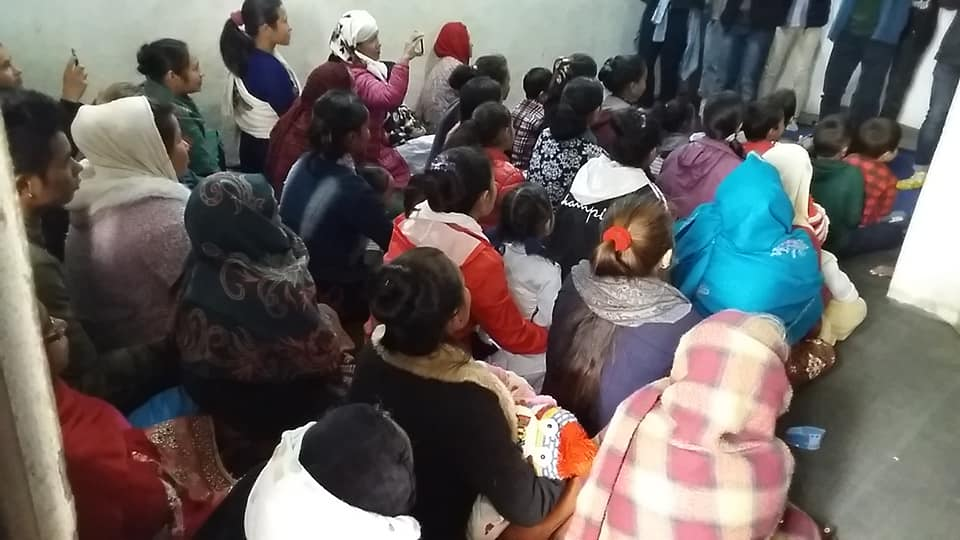

The Story of Abhisek Methodist Church
From a small prayer gathering of 12 faithful souls to a thriving community of over 500 members across 8 branches — this is a story of grace, sacrifice, and an unshakeable faith in God's faithfulness.

A Seed Planted in Prayer
"Faith the size of a mustard seed can move mountains."
It began not with grand plans, but with a handful of broken hearts and a desperate hunger for God. In the year 2001, twelve believers gathered for the first time in a humble room — no stage, no microphone, only a wooden cross nailed to the wall and a tattered Bible.
They prayed, wept, and believed. The vision was simple yet profound: to build a community where every person could encounter the living God. What seemed impossible on that first night became the cornerstone of everything Abhisek Methodist Church is today.

The First House of God
"Unless the Lord builds the house, the builders labour in vain."
Four years of faithful tithing, sacrifice, and prayer — and God was faithful. In 2005, through the generous hearts of members and the miraculous provision of God, Abhisek Methodist Church dedicated its first permanent building.
On the day the doors opened, there were grown men weeping at the entrance. For many, it was the physical proof that God had heard their prayers. Membership swelled to over 100 believers, each one a living stone in the house God was building.
Going Beyond the Four Walls
"Pure religion is this: to care for orphans and widows in their distress."
A true church never stays within its walls. In 2008, Abhisek Methodist launched its first large-scale community outreach programs — food drives, free medical camps and educational sponsorships for underprivileged children.
Hundreds of families in the surrounding community felt the tangible love of God through the hands and hearts of church volunteers. These programs became the hallmark of identity: a church that serves before it speaks.
The First Branch is Born
"Go therefore and make disciples of all nations."
The church was growing beyond what its walls could hold. Rather than expand inward, the leadership made a bold, Spirit-led decision: plant a new church. In 2012, the first branch of Abhisek Methodist Church was opened in a neighbouring community.
On opening day, the branch was already packed. People who had never been to church before walked through those doors, many moved to tears by the warmth and worship they encountered. A new family had been born — and it was only the beginning.
Youth & Worship Ministry Ignites
"Let no one look down on you because you are young."
The young people of Abhisek Methodist Church had been waiting for this moment. In 2016, the church officially launched its Youth Ministry and Praise & Worship Team — and the impact was immediate and electric.
Young men and women who had been sitting in the congregation stepped onto the stage. They sang with tears streaming, they led prayers with conviction, and they preached with fire. The church grew to over 300 active members — and the average age of leadership dropped by a decade overnight.
When the Doors Closed, Faith Opened a Window
"Nothing can separate us from the love of God."
The year 2020 brought the world to a standstill. Churches locked their doors, and the faithful were uncertain. But the spirit of Abhisek Methodist Church refused to be quarantined. Within weeks, the church had pivoted to a full digital ministry platform.
Saturdays became virtual gatherings. Prayer groups moved to video calls. Sermon downloads reached people who had never stepped foot in a church before. What the enemy intended for isolation, God turned into the greatest expansion of our ministry in two decades.
A Quarter Century of God's Faithfulness
"Surely goodness and mercy shall follow me all the days of my life."
Twenty-five years. Those twelve believers who knelt in prayer in a humble room could never have imagined this moment. In 2024, Abhisek Methodist Church celebrated its Silver Anniversary — surrounded by over 500 members, 8 established branches, and a legacy that will outlast all of us.
The celebration was filled with tears of joy, testimonies of healing and restoration, and a renewed commitment to the vision: to carry the Gospel to every corner of the region and beyond. The best is not behind us. By God's grace, the best is yet to come.
Be Part of the Next Chapter
The story of Abhisek Methodist Church is still being written — and there is a place in it for you. Come, join us every Saturday, and together let us write the next decades of God's faithfulness.
Join Our Story